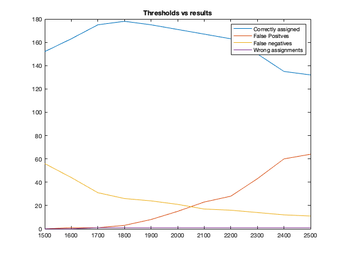

Contents
Training
im_r=112;
im_c=92;
im_n=im_r*im_c;
num_person=32;
train_per_person=6;
N=num_person*train_per_person;
train_X=zeros(im_n,N);
for i = 1:num_person
for j = 1:train_per_person
path="../data/ORL/s"+i+"/"+j+".pgm";
img=imread(path);
train_X(:,6*(i-1)+j)=img(:);
end
end
train_mean_X=mean(train_X,2);
train_bar_X=train_X-train_mean_X;
[U,S,~]=svd(train_bar_X);
test_N=num_person*(10-train_per_person)+8*10;
test_X=zeros(im_n,test_N);
for i = 1:num_person
for j = 1:10-train_per_person
path="../data/ORL/s"+i+"/"+(j+6)+".pgm";
img=imread(path);
test_X(:,4*(i-1)+j)=img(:);
end
end
for i = 33:40
for j = 1:10
path="../data/ORL/s"+i+"/"+(j)+".pgm";
img=imread(path);
test_X(:,num_person*(10-train_per_person)+10*(i-33)+j)=img(:);
end
end
Recognition Experiment
test_bar_X=test_X-train_mean_X;
y=[];
x=0;
threshold = [1.5e+03, 1.6e+03, 1.7e+03, 1.8e+03, 1.9e+03, 2e+03, 2.1e+03, 2.2e+03, 2.3e+03, 2.4e+03, 2.5e+03];
correctly_assigned = zeros(size(threshold));
false_positives = zeros(size(threshold));
false_negatives = zeros(size(threshold));
wrong_assignments = zeros(size(threshold));
for max1 = threshold
k=30;
Uk=U(:,1:k);
train_E=Uk'*train_bar_X;
test_E=Uk'*test_bar_X;
correct=0;
s0=0;
false_negative=0;
false_positive=0;
wrongly_assigned=0;
total_examples=0;
for i = 1:size(test_E,2)
arr=sqrt(sum((train_E-test_E(:,i)).^2,1));
[check,idx]=min(arr);
total_examples=total_examples+1;
if(i<=num_person*(10-train_per_person))
if(check>max1)
false_negative=false_negative+1;
else
if(floor((i-1)/4) ~= floor((idx-1)/6))
wrongly_assigned=wrongly_assigned+1;
end
end
else
if(check<max1)
false_positive=false_positive+1;
end
end
end
x = x+1;
correctly_assigned(x) = (total_examples-false_negative-false_positive-wrongly_assigned);
false_positives(x) = false_positive;
false_negatives(x) = false_negative;
wrong_assignments(x) = wrongly_assigned;
disp("for threshold : "+max1+" result are as follows :-");
disp("total : "+total_examples);
disp("correct : "+(total_examples-false_negative-false_positive-wrongly_assigned));
disp("false_negatives : "+false_negative);
disp("false_positives : "+false_positive);
disp("wrongly_assigned : "+wrongly_assigned);
disp(" ");
end
for threshold : 1500 result are as follows :-
total : 208
correct : 152
false_negatives : 56
false_positives : 0
wrongly_assigned : 0
for threshold : 1600 result are as follows :-
total : 208
correct : 163
false_negatives : 44
false_positives : 1
wrongly_assigned : 0
for threshold : 1700 result are as follows :-
total : 208
correct : 175
false_negatives : 31
false_positives : 1
wrongly_assigned : 1
for threshold : 1800 result are as follows :-
total : 208
correct : 178
false_negatives : 26
false_positives : 3
wrongly_assigned : 1
for threshold : 1900 result are as follows :-
total : 208
correct : 175
false_negatives : 24
false_positives : 8
wrongly_assigned : 1
for threshold : 2000 result are as follows :-
total : 208
correct : 171
false_negatives : 21
false_positives : 15
wrongly_assigned : 1
for threshold : 2100 result are as follows :-
total : 208
correct : 167
false_negatives : 17
false_positives : 23
wrongly_assigned : 1
for threshold : 2200 result are as follows :-
total : 208
correct : 163
false_negatives : 16
false_positives : 28
wrongly_assigned : 1
for threshold : 2300 result are as follows :-
total : 208
correct : 150
false_negatives : 14
false_positives : 43
wrongly_assigned : 1
for threshold : 2400 result are as follows :-
total : 208
correct : 135
false_negatives : 12
false_positives : 60
wrongly_assigned : 1
for threshold : 2500 result are as follows :-
total : 208
correct : 132
false_negatives : 11
false_positives : 64
wrongly_assigned : 1
Experiment details
figure;
plot(threshold,correctly_assigned,threshold,false_positives,threshold,false_negatives,threshold,wrong_assignments);
legend('Correctly assigned','False Positves','False negatives','Wrong assignments');
title('Thresholds vs results');

Results
disp("Results are as follows : ");
disp("total : "+ 208);
disp("correct : "+(208 - false_positives(4)-false_negatives(4)-wrong_assignments(4)));
disp("false_negatives : "+false_negatives(4));
disp("false_positives : "+false_positives(4));
disp("wrongly_assigned : "+wrong_assignments(4));
Results are as follows :
total : 208
correct : 178
false_negatives : 26
false_positives : 3
wrongly_assigned : 1